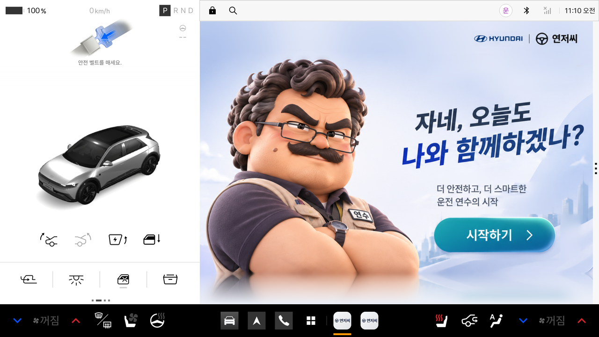
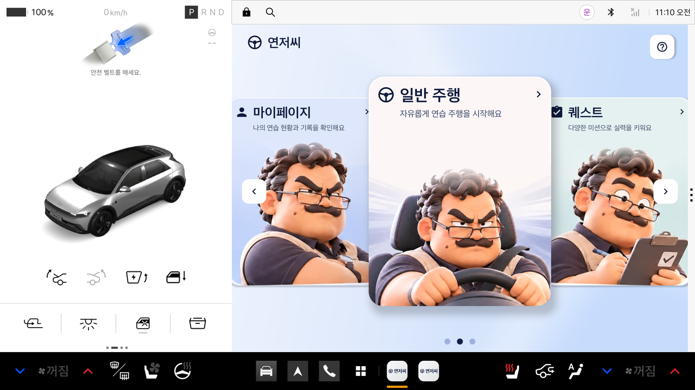
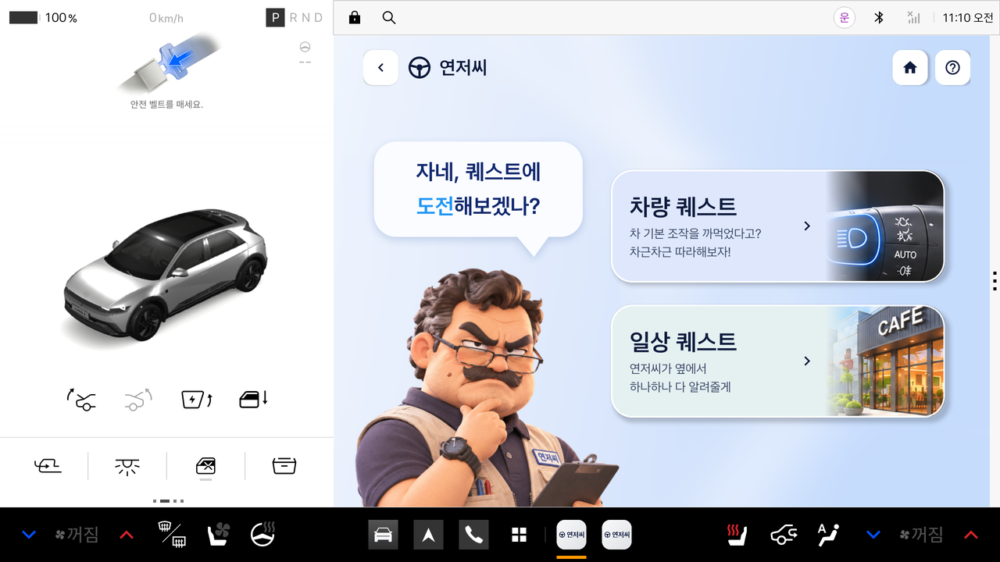
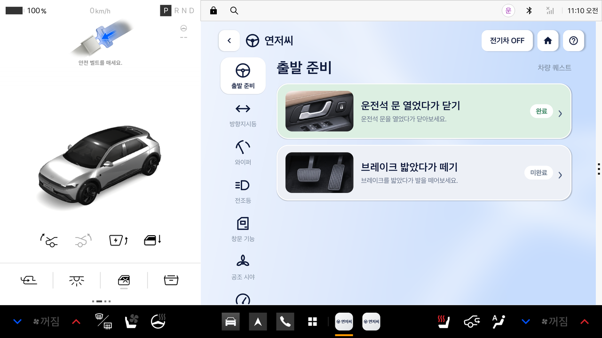
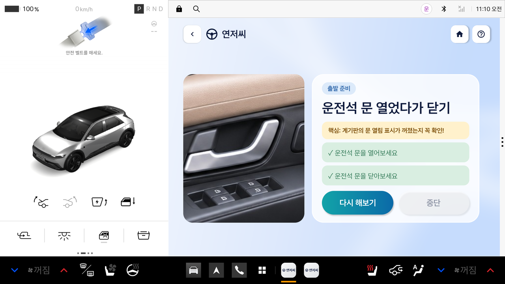
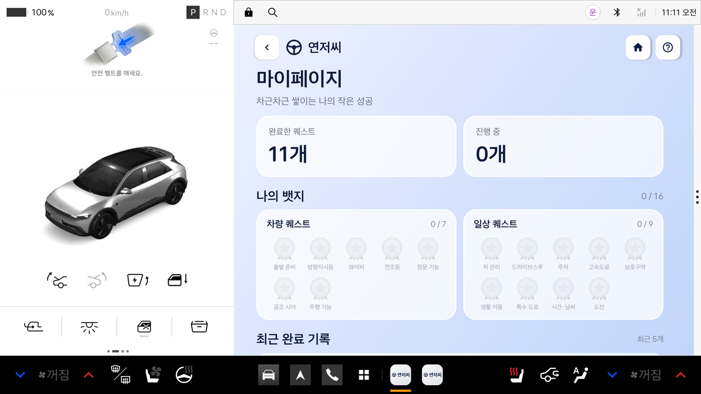

1
시작
연저씨가 인사하고 앱을 시작해요
시작 화면›

2
메인
마이페이지 · 일반 주행 · 퀘스트를 카드로 고르기
카드 3장›

3
퀘스트 종류
차량 조작을 익히는 차량 퀘스트, 실제 운전 상황의 일상 퀘스트
2종류›

4
퀘스트 목록
카테고리별로 골라서 완료 여부를 한눈에 확인
완료 / 미완료›

5
퀘스트 진행
단계별 안내를 따라 실제 차량을 조작하면 앱이 신호로 확인
차량 신호 확인›

6
마이페이지
완료한 퀘스트와 카테고리 뱃지, 최근 기록
기록 · 뱃지